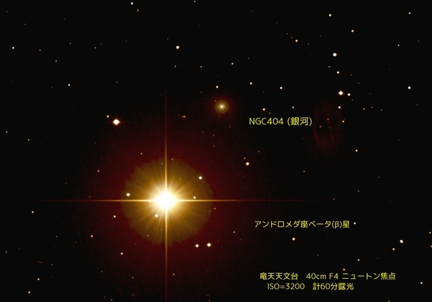

Sorry, There're no pages on this server.
もし、読み込みに時間がかかったり、504エラーが出たりしたら、再読み込みをしてみてください
If you wasted too much time to load, and/or your brouser showed HTTP 504 Error, then please reload new page.
おまけ：NGC 404 (エヌジーシー ４０４)
（アンドロメダ座にある銀河。近くにある2等星がまぶしく、 大きな望遠鏡を用いても、肉眼では、やや見ずらい。 約1000万光年のかなたにある、約1000億個の星の集まり。） いわゆる「アンドロメダ大銀河」とは別の天体です。
